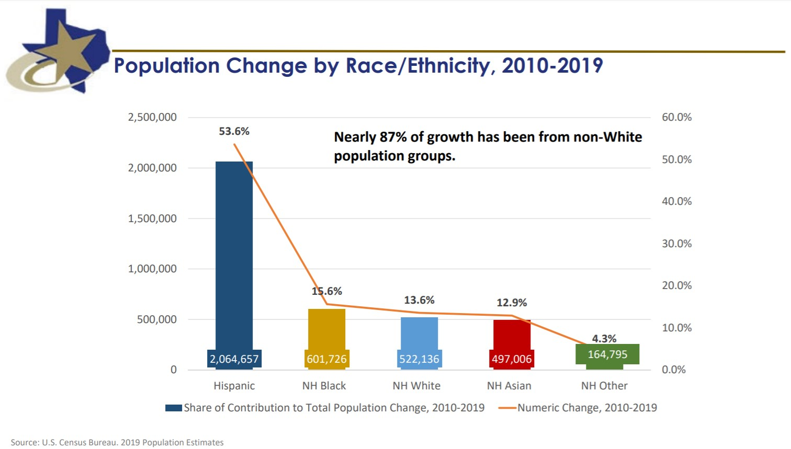

Last year, Donald Trump won Texas’ 38 electoral votes handily, earning 52% of the vote compared to Biden’s 46% (R+6). Taken on its own, this is hardly surprising - Texas has gone to the Republican presidential candidate in every election since 1980. Looking at the relative gains made in Texas over recent election cycles, however, paints a much more hopeful picture for Democrats hoping to flip the state & garner the nickname, “blexas.”
On election day, FiveThirtyEight and the Economist gave Biden a 38% and 30% chance of winning in Texas, respectively. While still bearish on Biden, this is far more bullish than 2016, when FiveThirtyEight’s model gave Clinton a mere 5% chance of winning in Texas (in fact, both FiveThirtyEight and the Economist were more confident in Biden’s chance of winning Texas in 2020 than FiveThirtyEight was that Trump would win the presidency in 2016 (28%)). Part of this shift can be attributed to Democratic gains nationally, but Texas Democrats have been steadily gaining more ground than can be explained by national swing.
The Cook Political Report publishes its Partisan Voter Index (PVI) following each presidential election. PVI is a measure of how a state, district, or county votes relative to the national environment. For example, say a Democratic candidate wins 53% of the two-party voteshare nationally, but 51% in a given state. Despite the state going to the Democratic candidate, the state PVI would be R+2%, since the candidate performed 2% under the national vote (the actual PVI calculated in the Cook report is slightly more involved, but this basic understanding is sufficient for our purposes). Looking at Texas’ PVI over past elections, we see that Democrats have been making relative gains in every election since 2004, despite Texas still voting more Republican than the nation.
Much of this can likely be attributed to demographic shifts drive by major Texas cities - Dallas, Houston, Austin, and San Antonio have seen massive population increases, largely due to domestic and international migration (as opposed to natural changes - e.g., births). As Texas grows, it also continues to diversify. The non-hispanic white population in Texas dropped from 45% in 2010 to 41% in 2019, and non-white population groups have driven growth over the past 10 years.

All that being said, while I expect that Texas will continue to experience demographic shifts that are favorable in the eyes of Democratic politicians, in the absence of any real modeling work, I’m hesitant to say that Texas will turn blue in the near term. Despite gains in the presidential results, Texas Democrats didn’t outperform expectations in the house, nor did they even advance a candidate in the special election for TX-06 (two Republican candidates advanced to a runoff). Governor Abbott is also introducing a special legislative session with one goal (of many) of making Texas a state with some of the most restrictive voting laws with targeted partisan effects. Looking to other states as a reference, North Carolina had also seen similar PVI shifts in the past without resulting in Democratic victories (though, to be fair, North Carolina hasn’t experienced the same level of demographic shift that Texas is undergoing).
Perhaps there is some modeling work I can do to produce a more definitive stance, but until then, I’ll hold on making any bold predictions.
As always, you can find my work on github.
It’s been quite a while, but it’s good to get back into writing again. I wrote the scripts/made the charts for this post about two weeks ago, but haven’t had the time (or rather, haven’t made the time) to write the post itself. While I feel like I’ve been saying this for three months now, I do hope to get back to a more regular schedule soon - perhaps biweekly, to avoid rushing projects. We’ll see - in any regard, here are some updates that I’m excited about: